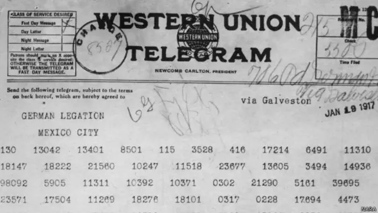

FORMACIÓN ACADÉMICA
IPN - ESCOM
Ingeniería en Sistemas Computacionales | 2022 - Actualidad
6to semestre en curso
IPN - CET "Walter Cross Buchanan"
Técnico en redes de computación | 2020-2022
Media Superior
CONTACTO
REDES SOCIALES
CERTIFICACIONES
| Certificación | Fecha |
|---|---|
| Google Cloud Computing Foundations Certificate | Junio 2025 |
| Participación en ExpoESCOM 2024 | Junio 2024 |
| Participación en ExpoESCOM 2025 | Junio 2025 |
PROYECTOS
| Proyecto | Fecha | Descripción |
|---|---|---|
| Sistema de gestión de incidentes en el Mexibus | Septiembre 2025 - Diciembre 2025 | Sistema web y móvil para reportar, avisar, gestionar y validar sobre incidentes en la ruta de un Mexibus |
| Gestión Web para una Biblioteca | Enero 2025 - Junio 2025 | Página Web para una biblioteca web para uso del personal y de lectores |
| Sistema Web para una Óptica | Febrero 2025 - Junio 2025 | Página Web para ópticas pequeñas que optimiza los procesos antiguos |
| Compilador y Simulador de códigos basados en VHDL para circuitos eléctricos | Enero 2025 - Junio 2025 | Compilador capaz de realizar operaciones de circuitos eléctricos básicos |
| Sistema de Auto Balance con Control PID | Agosto 2024 - Diciembre 2024 | Microcontrolador usado para gestionar la estabilidad y balance de una pelota en una superficie |
| Sensor de Temperatura con Interfaz Web | Enero 2024 - Junio 2024 | Circuito eléctrico capaz de mostrar en tiempo real la medición en Interfaz Web |
| Página Web para una Tienda de Música | Agosto 2023 - Diciembre 2023 | Página para el manejo interno de la tienda, inventario, venta en mostrador y manejo de personal |
LENGUAJES Y HERRAMIENTAS
Lenguajes de Programación
Plataformas y Herramientas
Idiomas
Competencias Profesionales
MIS HOBBIES
LECTURA
Lector activo enfocado en fantasia, mundos diferentes, contexto detras de cada escrito. Mi interés se centra en el análisis crítico de la estructura narrativa, el desarrollo de personajes y la exploración de temas complejos. Disfruto deconstruyendo el estilo del autor y su impacto en el contexto literario.

FÓRMULA 1
Seguidor de la Fórmula 1, con interés particular en el análisis de la estrategia de carrera, la telemetría y el desarrollo de la ingeniería aerodinámica. Evalúo el rendimiento de pilotos y equipos basándome en la gestión de neumáticos, las paradas en pits y la adaptación a las normativas técnicas de cada temporada.
VIDEOJUEGOS
Disfrutar de videojuegos como forma de entretenimiento y análisis de mecánicas de juego.
VIDEOS DE MIS HOBBIES
MI VIDEO PGP
Video sobre PGP (Pretty Good Privacy)
ACERCA DE CRIPTOGRAFÍA
EL TELEGRAMA ZIMMERMANN
Un telegrama diplomático secreto enviado por el Ministro de Asuntos Exteriores del Imperio Alemán, Arthur Zimmermann, al embajador alemán en México.
El mensaje proponía una alianza militar entre Alemania y México si Estados Unidos entraba en la Primera Guerra Mundial contra Alemania. A cambio, Alemania prometía ayudar a México a recuperar los territorios de Texas, Nuevo México y Arizona.
El telegrama fue interceptado y descifrado por la inteligencia naval británica (específicamente la "Sala 40").
Los británicos compartieron el telegrama descifrado con Estados Unidos. La publicación del mensaje causó una indignación masiva en el público estadounidense y fue un factor decisivo que impulsó al Congreso de EE. UU. a declarar la guerra a Alemania pocos meses después, alterando el equilibrio de la Primera Guerra Mundial.
